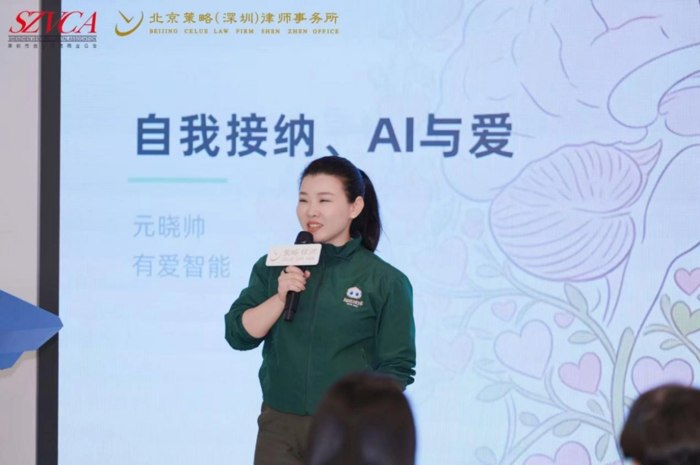
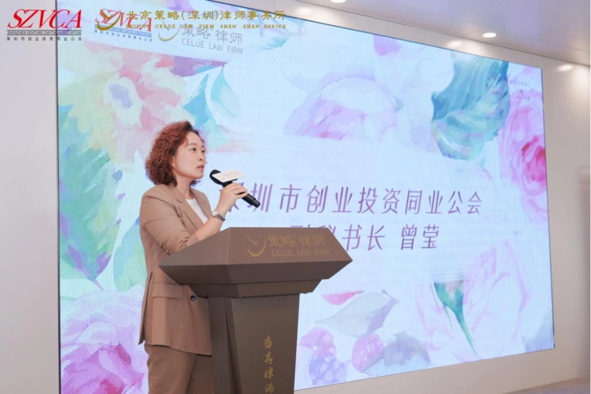
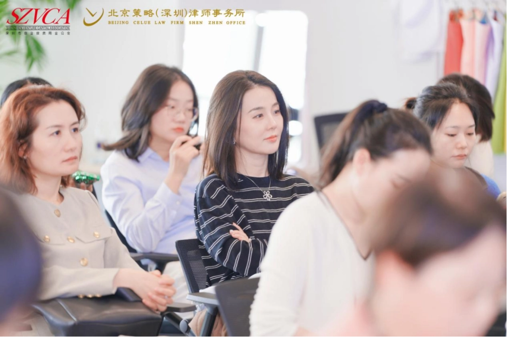
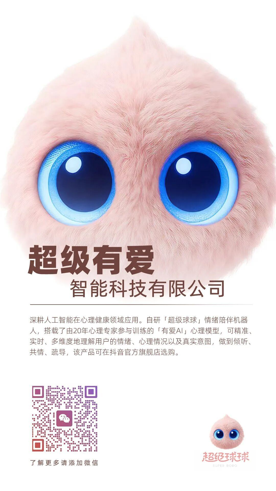

元博⼠指出，在⼈⼯智能快速发展的今天，⼥性特有的共情⼒、包容性与韧性是⼈⼯智能时代的核⼼竞争优势，更是科技创业的底层逻辑。元晓帅博⼠进⼀步阐述了将“爱”作为算法底层的逻辑理念，并介绍了团队在这⼀理念的指导下，致⼒于研发具备情绪疗愈功能的AI伙伴“超级球球”，通过技术⼿段推动⼼理健康服务的⽇常化、普及化，展现科技温度与⼈⽂关怀的深度融合。元博⼠充满洞⻅与温情的分享，引发了现场的强烈共鸣与⾼度认可。

来⾃投资、企业及法律界的五⼗余位杰出⼥性代表共聚⼀堂，⼤家结合⾃⾝深厚的从业深耕经验与⼈⽣感悟，带来精彩纷呈的主题分享，现场⽓氛温馨⽽热烈。


此次元博⼠受邀参加“3·8⼥神节”特别活动，不仅是创业投资⾏业对“超级有爱智能科技”和“超级球球AI情绪陪伴机器⼈”的肯定，更是代表了“她”⼒量在科技创新领域⽇益重要的体现。站在科技与⼈⽂的交汇点上，以元晓帅博⼠为缩影的⼥性科创从业者，正在⽤温柔且坚韧的⼒量，奋⼒开拓着新时代“科技向善”的崭新道路。未来，“超级有爱”也将始终坚持以“AI情绪疗愈”为核⼼，持续深耕AI⼼理领域，推进产品技术迭代，让有温度的AI技术惠及更⼴泛的⼈群，为⼈⼯智能时代注⼊更多有爱温度。
